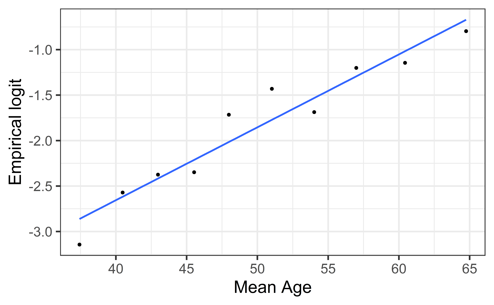
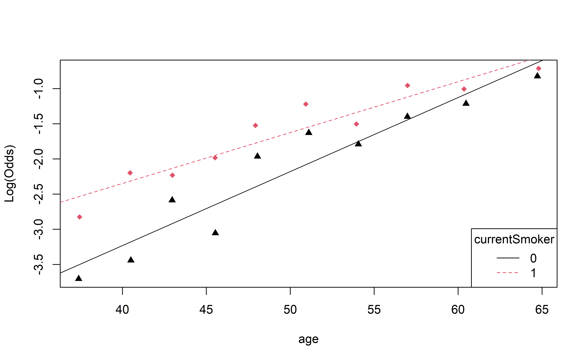

Brief introduction to multiple logistic regression
Conducting inference for logistic regression
Computational setup
# load packageslibrary(tidyverse)
── Attaching core tidyverse packages ──────────────────────── tidyverse 2.0.0 ──
✔ dplyr 1.1.4 ✔ readr 2.1.5
✔ forcats 1.0.0 ✔ stringr 1.5.1
✔ ggplot2 3.5.1 ✔ tibble 3.2.1
✔ lubridate 1.9.3 ✔ tidyr 1.3.1
✔ purrr 1.0.2
── Conflicts ────────────────────────────────────────── tidyverse_conflicts() ──
✖ dplyr::filter() masks stats::filter()
✖ dplyr::lag() masks stats::lag()
ℹ Use the conflicted package (<http://conflicted.r-lib.org/>) to force all conflicts to become errors
library(broom)library(ggformula)
Loading required package: scales
Attaching package: 'scales'
The following object is masked from 'package:purrr':
discard
The following object is masked from 'package:readr':
col_factor
Loading required package: ggridges
New to ggformula? Try the tutorials:
learnr::run_tutorial("introduction", package = "ggformula")
learnr::run_tutorial("refining", package = "ggformula")
library(knitr)library(kableExtra) # for table embellishments
Attaching package: 'kableExtra'
The following object is masked from 'package:dplyr':
group_rows
library(Stat2Data) # for empirical logitlibrary(countdown)# set default theme and larger font size for ggplot2ggplot2::theme_set(ggplot2::theme_bw(base_size =20))
Data
Risk of coronary heart disease
This data set is from an ongoing cardiovascular study on residents of the town of Framingham, Massachusetts. We want to examine the relationship between various health characteristics and the risk of having heart disease.
TenYearCHD:
1: High risk of having heart disease in next 10 years
0: Not high risk of having heart disease in next 10 years
Rows: 4240 Columns: 16
── Column specification ────────────────────────────────────────────────────────
Delimiter: ","
dbl (16): male, age, education, currentSmoker, cigsPerDay, BPMeds, prevalent...
ℹ Use `spec()` to retrieve the full column specification for this data.
ℹ Specify the column types or set `show_col_types = FALSE` to quiet this message.
heart_disease |>head() |>kable()
TenYearCHD
age
currentSmoker
0
39
0
0
46
0
0
48
1
1
61
1
0
46
1
0
43
0
Conditions
The models
Model 1: Let’s predict TenYearCHD from currentSmoker:
risk_fit <-glm(TenYearCHD ~ currentSmoker, data = heart_disease, family ="binomial")tidy(risk_fit, conf.int =TRUE) |>kable(digits =3)
term
estimate
std.error
statistic
p.value
conf.low
conf.high
(Intercept)
-1.774
0.061
-28.936
0.000
-1.896
-1.656
currentSmoker1
0.108
0.086
1.266
0.206
-0.059
0.276
Model 2: Let’s predict TenYearCHD from age:
risk_fit <-glm(TenYearCHD ~ age, data = heart_disease, family ="binomial")tidy(risk_fit, conf.int =TRUE) |>kable(digits =3)
term
estimate
std.error
statistic
p.value
conf.low
conf.high
(Intercept)
-5.561
0.284
-19.599
0
-6.124
-5.011
age
0.075
0.005
14.178
0
0.064
0.085
Conditions for logistic regression
Linearity: The log-odds have a linear relationship with the predictors.
Randomness: The data were obtained from a random process.
Independence: The observations are independent from one another.
Empirical logit
The empirical logit is the log of the observed odds:
Divide the range of the predictor into intervals with approximately equal number of cases. (If you have enough observations, use 5 - 10 intervals.)
Compute the empirical logit for each interval
. . .
You can then calculate the mean value of the predictor in each interval and create a plot of the empirical logit versus the mean value of the predictor in each interval.
Empirical logit plot in R (quantitative predictor)
Created using dplyr and ggplot functions.

Empirical logit plot in R (quantitative predictor)
Created using dplyr and ggformula functions.
heart_disease |>mutate(age_bin =cut_interval(age, n =10)) |>group_by(age_bin) |>mutate(mean_age =mean(age)) |>count(mean_age, TenYearCHD) |>mutate(prop = n/sum(n)) |>filter(TenYearCHD =="1") |>mutate(emp_logit =log(prop/(1-prop))) |>gf_point(emp_logit ~ mean_age) |>gf_smooth(method ="lm", se =FALSE) |>gf_labs(x ="Mean Age", y ="Empirical logit")
Empirical logit plot in R (quantitative predictor)
Using the emplogitplot1 function from the Stat2Data R package
emplogitplot1(TenYearCHD ~ age, data = heart_disease, ngroups =10)
Empirical logit plot in R (interactions)
Using the emplogitplot2 function from the Stat2Data R package
emplogitplot2(TenYearCHD ~ age + currentSmoker, data = heart_disease, ngroups =10, putlegend ="bottomright")

Checking linearity
✅ The linearity condition is satisfied. There is a linear relationship between the empirical logit and the predictor variables.
. . .
Complete Exercise 3.
Checking randomness
We can check the randomness condition based on the context of the data and how the observations were collected.
Was the sample randomly selected?
If the sample was not randomly selected, ask whether there is reason to believe the observations in the sample differ systematically from the population of interest.
. . .
✅ The randomness condition is satisfied. We do not have reason to believe that the participants in this study differ systematically from adults in the U.S. in regards to health characteristics and risk of heart disease.
Checking independence
We can check the independence condition based on the context of the data and how the observations were collected.
Independence is most often violated if the data were collected over time or there is a strong spatial relationship between the observations.
. . .
✅ The independence condition is satisfied. It is reasonable to conclude that the participants’ health characteristics are independent of one another.
Recap
How do we fit a logistic regression model?
Maximum likelihood estimation
Logistic regression conditions
Linearity
Randomness
Independence
Inference for Logistic Regression
Recall: Inference for Linear Regression
t-test: determine whether the a given \(\beta_i\) (slope) was different that zero
ANOVA/F-Test: To test the full model or to compare nested models
**SSModel/SSE/ \(R^2\) / $_{}:** metrics to try a measur the amount of variability explained by competing models